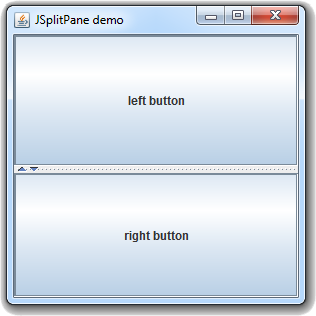

Java Swingالكلاس JSplitPane
مقدمة
الكلاس JSplitPane يسمى Split Pane و يستخدم لتقسيم الـ Frame إلى عدة أقسام مع إمكانية سحب الأقسام يدوياً.
إذاً الـ Split Pane يضيف Splitter في الـ Frame فيقسمها إلى قسمين أساسيين.
يستطيع المستخدم تحريك هذا الـ Splitter لتغيير حجم الأقسام الموجودة في الـ Frame لعرض محتواها بالشكل الذي يريده.
يمكن تحديد الـ Split Pane لتقسيم الـ Frame عامودياً أو أفقياً.
و يمكن تقسيم القسم الواحد إلى عدة أقسام أيضاً و هذا يسمى Nested Split Panes.
لجعل القسم الذي تريد إضافته في الـ Split Pane يظهر Scroll Bar عند الحاجة ضعه بداخل JScrollPane.
لا تقلق ستفهم كل شيء لاحقاً من الأمثلة.
بناؤه
public class JSplitPane
extends JComponent
implements Accessible
كونستركتورات الكلاس JSplitPane
الجدول التالي يحتوي على أهم الكونستركتورات الموجودة في الكلاس JSplitPane.
| الكونستركتور مع تعريفه |
public JSplitPane()
ينشئ كائن من الكلاس JSplitPane يضيف Splitter في الـ Frame, فيقسمها إلى قسمين بالعرض.
ملاحظة: إذا لم تضع أي شيء في الأقسام, سيقوم بوضع زر واحد في كل قسم. |
public JSplitPane(int orientation)
ينشئ كائن من الكلاس JSplitPane يضيف Splitter في الـ Frame, فيقسمها إلى قسمين بالعرض أو الطول.
مكان الباراميتر orientation نضع إحدى الثوابت الموجودة في الكلاس JSplitPane المخصصة لتحديد طريقة تقسيم الـ Frame.
الثوابت التي يسمح باستخدامها هي:
إفتراضياً, الـ Split Pane يستخدم الثابت JSplitPane.HORIZONTAL.
يرمي الإستثناء IllegalArgumentException في حال لم يتم تحديد الـ Orientation بواسطة الثوابت المخصصة لذلك.
ملاحظة: إذا لم تضع أي شيء في الأقسام, سيقوم بوضع زر واحد في كل قسم. |
public JSplitPane(int orientation, Component leftComponent, Component rightComponent)
ينشئ كائن من الكلاس JSplitPane يضيف Splitter في الـ Frame, فيقسمها إلى قسمين بالعرض أو الطول مع تحديد محتوى كل قسم.
مكان الباراميتر orientation نضع إحدى الثوابت الموجودة في الكلاس JSplitPane المخصصة لتحديد طريقة تقسيم الـ Frame. مكان الباراميتر leftComponent نضع الشيء الذي نريده أن يظهر في القسم الأيسر أو الأعلى. مكان الباراميتر rightComponent نضع الشيء الذي نريده أن يظهر في القسم الأيمن أو الأسفل.
يرمي الإستثناء IllegalArgumentException في حال لم يتم تحديد الـ Orientation بواسطة الثوابت المخصصة لذلك. |
public JSplitPane(int orientation, boolean continuousLayout, Component leftComponent, Component rightComponent)
ينشئ كائن من الكلاس JSplitPane يضيف Splitter في الـ Frame, فيقسمها إلى قسمين بالعرض أو الطول مع تحديد محتوى كل قسم, بالإضافة إلى تحديد إذا كان سيتم رسم الـ Frame مباشرةً عند تحريك الـ Splitter.
مكان الباراميتر orientation نضع إحدى الثوابت الموجودة في الكلاس JSplitPane المخصصة لتحديد طريقة تقسيم الـ Frame. مكان الباراميتر continuousLayout نضع true حتى يتم رسم الـ Frame مباشرةً عند تحريك الـ Splitter, بالتالي لن يظهر خط أسود عند تحريكه. مكان الباراميتر leftComponent نضع الشيء الذي نريده أن يظهر في القسم الأيسر أو الأعلى. مكان الباراميتر rightComponent نضع الشيء الذي نريده أن يظهر في القسم الأيمن أو الأسفل.
يرمي الإستثناء IllegalArgumentException في حال لم يتم تحديد الـ Orientation بواسطة الثوابت المخصصة لذلك. |
دوال الكلاس JSplitPane
الجدول التالي يحتوي على أهم الدوال الموجودة في الكلاس JSplitPane.
| الدالة مع تعريفه |
public void setOrientation(int orientation)
تستخدم لتحديد ما إذا كان سيتم تقسيم الـ Frame أفقياً أم عامودياً.
مكان الباراميتر orientation نضع إحدى الثوابت الموجودة في الكلاس JSplitPane المخصصة لتحديد طريقة تقسيم الـ Frame.
الثوابت التي يسمح باستخدامها هي:
إفتراضياً, الـ Split Pane يستخدم الثابت JSplitPane.HORIZONTAL.
يرمي الإستثناء IllegalArgumentException في حال لم يتم تحديد الـ Orientation بواسطة الثوابت المخصصة لذلك. |
public void setContinuousLayout(boolean continuousLayout)
تستخدم لتحديد إذا كان سيتم رسم الـ Frame مباشرةً عند تحريك الـ Splitter أم لا.
بمعنى آخر, لتحديد إذا كان سيتم تحديث الـ Frame لحظة بلحظة أثناء تحريك الـ Splitter.
مكان الباراميتر continuousLayout نضع true إذا أردنا أن يتم رسم الـ Frame مباشرةً عند تحريك الـ Splitter, بالتالي لن يظهر خط أسود عند تحريكه. و نضع false إذا لم نرد ذلك. |
public void setDividerLocation(int location)
تستخدم لتحديد موقع الـ Splitter في الـ Frame.
مكان الباراميتر location نضع عدد صحيح يحدد موقع الـ Splitter الأولي في الـ Frame. |
public void setDividerSize(int size)
تستخدم لتحديد موقع الـ Splitter في الـ Frame.
مكان الباراميتر location نضع عدد صحيح يحدد موقع الـ Splitter الأولي في الـ Frame. |
public void setOneTouchExpandable(boolean isOneTouchExpandable)
تستخدم لإضافة سهمين صغيرين على الـ Splitter يستخدمان لتحريكه بسرعة في إتجاه محدد.
مكان الباراميتر isOneTouchExpandable نضع true إذا أردنا إظهار السهمين. و نضع false إذا لم نرد ذلك. |
public void setLeftComponent(Component comp)
تستخدم لتحديد الشيء الذي سيتم وضعه في يسار ( أو أعلى ) الـ Splitter.
مكان الباراميتر comp نضع أي شيء نريد وضعه في ذلك المكان. |
public void setRightComponent(Component comp)
تستخدم لتحديد الشيء الذي سيتم وضعه في يمين ( أو أسفل ) الـ Splitter.
مكان الباراميتر comp نضع أي شيء نريد وضعه في ذلك المكان. |
public void setTopComponent(Component comp)
تستخدم لتحديد الشيء الذي سيتم وضعه في أعلى ( أو يسار ) الـ Splitter.
مكان الباراميتر comp نضع أي شيء نريد وضعه في ذلك المكان. |
public void setBottomComponent(Component comp)
تستخدم لتحديد الشيء الذي سيتم وضعه في أسفل ( أو يمين ) الـ Splitter.
مكان الباراميتر comp نضع أي شيء نريد وضعه في ذلك المكان. |
أمثلة شاملة
المثال الأول
المثال التالي يعلمك طريقة إضافة الـ Splitter في الـ Frame لتقسيمها إلى قسمين.
ملاحظة: إفتراضياً, إذا لم تحدد محتوى أقسام الـ Frame ستجد أنه يضع زر واحد في كل قسم.
شاهد المثال »
المثال الثاني
المثال التالي يعلمك طريقة تحديد حجم الـ Splitter, إضافة أسهم عليه لجعل المستخدم قادراً على تحريكه بسرعة, بالإضافة إلى إخفاء اللون الأسود الذي يظهر عند تحريكه.
شاهد المثال »
المثال الثالث
المثال التالي يعلمك طريقة تقسيم الـ Frame إلى قسمين بالطول, أي إظهار الـ Splitter بشكل أفقي.

شاهد المثال »
المثال الرابع
المثال التالي يعلمك طريقة وضع إثنين Splitter في الـ Frame.
شاهد المثال »
المثال الخامس
المثال التالي يعلمك طريقة وضع أي محتوى تريده في الـ Split Pane و إضافة Scroll Bar للأقسام أيضاً.

شاهد المثال »


 محرر الويب
محرر الويب نظام الألوان
نظام الألوان محول الوحدات
محول الوحدات محلل عناوين الشبكات
محلل عناوين الشبكات